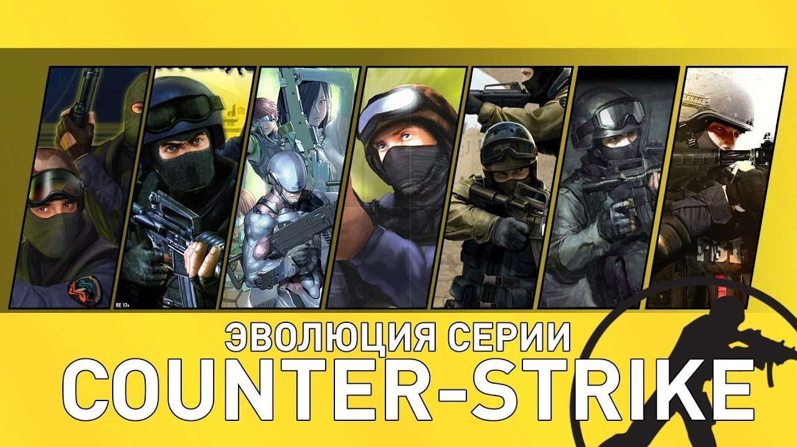

Quake 1977 года Игра заключалось в противостоянии двух соперников: монстров и людей. Эта игра ввела понятие о киберспорте. В 1997 году 17 летний Денис Фонг выиграл турнир и получил в подарок машину 355 spider. Игра после этого момента стала популярнее. Но в те времена все игры были в жанре зомби апокалипсиса. 1997, Navy seals В 1997 18 летний Мин Ли создавал модели для игр. И на движке Quake он создал свою игру. В этой игре также идет противостояние двух команд, но игра уже онлайн. Все думали что идея пришла из за теракта в 2001 11 сентября, но Мин Ли опровергнув сам этот миф, что он вдохновился фильмом “Схватка”. 1999-2000, Beta counter strike. С 1997 года по 2000 было созданы 7 бета версий игры контер страйк. Когда в 1998 году вышла игра hife-life Мин Ли переехал на ее движок, так как было больше возможностей. Постепенно игра набирала популярности. 2001, Counter Strike В 1999 Мин Ли предложили передать права компания Valve. Не долга думая Мин Ли согласился. Когда игроки слышали слухи об обновление они воспринимались им в штыки. Но, к сожалению, Мин Ли перешел в компанию “Fix Korea”. Он работал над игрой Rust 2004, Counter strike zero И так, в этой игре нет онлайна. Эта даже не продолжения игры. Эта игра была создана для сюжетного прохождения, она даже не набрала популярности. 2005, counter strike source В 2005 году была создана игра source в ней все обновлено. Графика, стрельба, оружия, новые карты. Также могли создать свои сервера и фишки. Но нужно было запускать через haif-life, но в скором времени эту проблему убрали. CS:GO 2012-2022 годов И наконец то франшиза самой культовой игры и по сей день. Это всеми любимая Counter-strike global offensive. Сюда были добавлены: скины на оружия, больше гранат, лучше графика, другая физика игры, звания, от Сильвера до Глобал элиты, были добавлены карты где ты мог тренироваться, так же были кейсы, капсулы, операция где ты тоже мог выбить скины на оружия и отличаться от других. Изначально многие не смогли привыкнуть к этой новой физике стрельбы, и перешли обратно в Counter-strike 1.6 и Counter-strike source, но в скором времени игры Counter-strike 1.6 и Source потеряли онлайн. И большее количество людей перешли в CS:GO.Так же Counter-strike global offensive связана с киберспортом, в нее каждый день играют от 100-900 т. людей в день, на данный момент по популярности это игра на 2 месте из всех.
